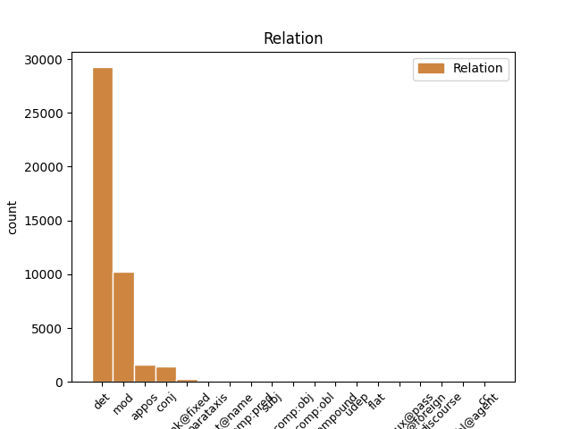
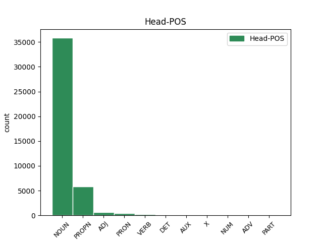
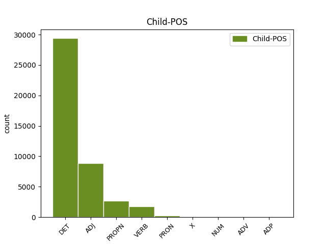

Distribution of features within this leaf



Agreement Rules sorted by frequency.
When the dependent token is None
1 Agarrado _ _ _ _ 0 _ _ _
2 a _ _ _ _ 0 _ _ _
3 o _ _ _ _ 0 _ _ _
4 copo _ _ _ _ 0 _ _ _
5 de _ _ _ _ 0 _ _ _
6 uísque _ _ _ _ 0 _ _ _
7 , _ _ _ _ 0 _ _ _
8 foi _ _ _ _ 0 _ _ _
9 outro _ _ _ _ 0 _ _ _
10 destaque _ _ _ _ 0 _ _ _
11 de _ _ _ _ 0 _ _ _
12 a o DET _ Definite=Def|Gender=Fem|Number=Sing|PronType=Art 13 det _ _
13 noite noite NOUN _ Gender=Fem|Number=Sing 0 _ _ _
14 . _ _ _ _ 0 _ _ _
When the dependent token is None
1 Mais _ _ _ _ 0 _ _ _
2 que _ _ _ _ 0 _ _ _
3 isso _ _ _ _ 0 _ _ _
4 : _ _ _ _ 0 _ _ _
5 os _ _ _ _ 0 _ _ _
6 papéis _ _ _ _ 0 _ _ _
7 de _ _ _ _ 0 _ _ _
8 a _ _ _ _ 0 _ _ _
9 segurança _ _ _ _ 0 _ _ _
10 afirmavam _ _ _ _ 0 _ _ _
11 que _ _ _ _ 0 _ _ _
12 , _ _ _ _ 0 _ _ _
13 em _ _ _ _ 0 _ _ _
14 razão _ _ _ _ 0 _ _ _
15 de _ _ _ _ 0 _ _ _
16 a _ _ _ _ 0 _ _ _
17 inflação _ _ _ _ 0 _ _ _
18 alta _ _ _ _ 0 _ _ _
19 , _ _ _ _ 0 _ _ _
20 não _ _ _ _ 0 _ _ _
21 se _ _ _ _ 0 _ _ _
22 deveria _ _ _ _ 0 _ _ _
23 descartar _ _ _ _ 0 _ _ _
24 sequer _ _ _ _ 0 _ _ _
25 o _ _ _ _ 0 _ _ _
26 risco _ _ _ _ 0 _ _ _
27 de _ _ _ _ 0 _ _ _
28 o _ _ _ _ 0 _ _ _
29 público _ _ _ _ 0 _ _ _
30 atirar _ _ _ _ 0 _ _ _
31 objetos _ _ _ _ 0 _ _ _
32 em _ _ _ _ 0 _ _ _
33 o _ _ _ _ 0 _ _ _
34 camarote camarote NOUN _ Gender=Masc|Number=Sing 0 _ _ _
35 presidencial presidencial ADJ _ Gender=Masc|Number=Sing 34 mod _ SpaceAfter=No
36 . _ _ _ _ 0 _ _ _
When the dependent token is None
1 Em _ _ _ _ 0 _ _ _
2 telefonema _ _ _ _ 0 _ _ _
3 a _ _ _ _ 0 _ _ _
4 Maurício _ _ _ _ 0 _ _ _
5 Corrêa _ _ _ _ 0 _ _ _
6 , _ _ _ _ 0 _ _ _
7 ministro _ _ _ _ 0 _ _ _
8 de _ _ _ _ 0 _ _ _
9 a _ _ _ _ 0 _ _ _
10 Justiça _ _ _ _ 0 _ _ _
11 , _ _ _ _ 0 _ _ _
12 o _ _ _ _ 0 _ _ _
13 governador _ _ _ _ 0 _ _ _
14 de _ _ _ _ 0 _ _ _
15 o _ _ _ _ 0 _ _ _
16 Rio Rio PROPN _ Gender=Masc|Number=Sing 0 _ _ _
17 , _ _ _ _ 0 _ _ _
18 Leonel Leonel PROPN _ Gender=Masc|Number=Sing 16 appos _ MWE=Leonel_Brizola|MWEPOS=PROPN
19 Brizola _ _ _ _ 0 _ _ _
20 , _ _ _ _ 0 _ _ _
21 desaconselhou _ _ _ _ 0 _ _ _
22 a _ _ _ _ 0 _ _ _
23 ida _ _ _ _ 0 _ _ _
24 de _ _ _ _ 0 _ _ _
25 Itamar _ _ _ _ 0 _ _ _
26 a _ _ _ _ 0 _ _ _
27 o _ _ _ _ 0 _ _ _
28 Sambódromo _ _ _ _ 0 _ _ _
29 . _ _ _ _ 0 _ _ _
When the dependent token is None
1 Agarrado agarrar VERB _ Gender=Masc|Number=Sing|VerbForm=Part 10 mod _ _
2 a _ _ _ _ 0 _ _ _
3 o _ _ _ _ 0 _ _ _
4 copo _ _ _ _ 0 _ _ _
5 de _ _ _ _ 0 _ _ _
6 uísque _ _ _ _ 0 _ _ _
7 , _ _ _ _ 0 _ _ _
8 foi _ _ _ _ 0 _ _ _
9 outro _ _ _ _ 0 _ _ _
10 destaque destaque NOUN _ Gender=Masc|Number=Sing 0 _ _ _
11 de _ _ _ _ 0 _ _ _
12 a _ _ _ _ 0 _ _ _
13 noite _ _ _ _ 0 _ _ _
14 . _ _ _ _ 0 _ _ _
When the dependent token is None
1 De _ _ _ _ 0 _ _ _
2 fato _ _ _ _ 0 _ _ _
3 , _ _ _ _ 0 _ _ _
4 a _ _ _ _ 0 _ _ _
5 maioria _ _ _ _ 0 _ _ _
6 de _ _ _ _ 0 _ _ _
7 suas _ _ _ _ 0 _ _ _
8 histórias _ _ _ _ 0 _ _ _
9 acontece _ _ _ _ 0 _ _ _
10 em _ _ _ _ 0 _ _ _
11 um _ _ _ _ 0 _ _ _
12 tempo tempo NOUN _ Gender=Masc|Number=Sing 0 _ _ _
13 algo algo PRON _ Gender=Masc|Number=Sing|PronType=Ind 12 appos _ _
14 a _ _ _ _ 0 _ _ _
15 a _ _ _ _ 0 _ _ _
16 frente _ _ _ _ 0 _ _ _
17 de _ _ _ _ 0 _ _ _
18 o _ _ _ _ 0 _ _ _
19 presente _ _ _ _ 0 _ _ _
20 , _ _ _ _ 0 _ _ _
21 mas _ _ _ _ 0 _ _ _
22 Gibson _ _ _ _ 0 _ _ _
23 rompe _ _ _ _ 0 _ _ _
24 completamente _ _ _ _ 0 _ _ _
25 com _ _ _ _ 0 _ _ _
26 a _ _ _ _ 0 _ _ _
27 idéia _ _ _ _ 0 _ _ _
28 fundadora _ _ _ _ 0 _ _ _
29 de _ _ _ _ 0 _ _ _
30 a _ _ _ _ 0 _ _ _
31 FC _ _ _ _ 0 _ _ _
32 em _ _ _ _ 0 _ _ _
33 o _ _ _ _ 0 _ _ _
34 cinema _ _ _ _ 0 _ _ _
35 ou _ _ _ _ 0 _ _ _
36 em _ _ _ _ 0 _ _ _
37 a _ _ _ _ 0 _ _ _
38 literatura _ _ _ _ 0 _ _ _
39 de _ _ _ _ 0 _ _ _
40 « _ _ _ _ 0 _ _ _
41 futuro _ _ _ _ 0 _ _ _
42 » _ _ _ _ 0 _ _ _
43 como _ _ _ _ 0 _ _ _
44 evolução _ _ _ _ 0 _ _ _
45 . _ _ _ _ 0 _ _ _
When the dependent token is None
1 « _ _ _ _ 0 _ _ _
2 Chega _ _ _ _ 0 _ _ _
3 de _ _ _ _ 0 _ _ _
4 violência _ _ _ _ 0 _ _ _
5 / _ _ _ _ 0 _ _ _
6 Quero _ _ _ _ 0 _ _ _
7 ver _ _ _ _ 0 _ _ _
8 é _ _ _ _ 0 _ _ _
9 gol _ _ _ _ 0 _ _ _
10 de _ _ _ _ 0 _ _ _
11 placa _ _ _ _ 0 _ _ _
12 / _ _ _ _ 0 _ _ _
13 Todo _ _ _ _ 0 _ _ _
14 mundo _ _ _ _ 0 _ _ _
15 se _ _ _ _ 0 _ _ _
16 dá _ _ _ _ 0 _ _ _
17 mal _ _ _ _ 0 _ _ _
18 / _ _ _ _ 0 _ _ _
19 Por _ _ _ _ 0 _ _ _
20 meia meia NUM _ Gender=Masc|Number=Sing|NumType=Frac 0 _ _ _
21 dúzia dúzia NUM _ Gender=Masc|Number=Sing|NumType=Card 20 flat _ _
22 de _ _ _ _ 0 _ _ _
23 babacas _ _ _ _ 0 _ _ _
24 . _ _ _ _ 0 _ _ _
25 » _ _ _ _ 0 _ _ _
When the dependent token is None
1 Em _ _ _ _ 0 _ _ _
2 os _ _ _ _ 0 _ _ _
3 meios _ _ _ _ 0 _ _ _
4 diplomáticos _ _ _ _ 0 _ _ _
5 há _ _ _ _ 0 _ _ _
6 , _ _ _ _ 0 _ _ _
7 aliás _ _ _ _ 0 _ _ _
8 , _ _ _ _ 0 _ _ _
9 quem _ _ _ _ 0 _ _ _
10 interprete _ _ _ _ 0 _ _ _
11 estas _ _ _ _ 0 _ _ _
12 manifestações _ _ _ _ 0 _ _ _
13 de _ _ _ _ 0 _ _ _
14 « _ _ _ _ 0 _ _ _
15 sensibilidade _ _ _ _ 0 _ _ _
16 » _ _ _ _ 0 _ _ _
17 em _ _ _ _ 0 _ _ _
18 relação _ _ _ _ 0 _ _ _
19 a _ _ _ _ 0 _ _ _
20 a _ _ _ _ 0 _ _ _
21 questão _ _ _ _ 0 _ _ _
22 de _ _ _ _ 0 _ _ _
23 Timor _ _ _ _ 0 _ _ _
24 por _ _ _ _ 0 _ _ _
25 parte _ _ _ _ 0 _ _ _
26 de _ _ _ _ 0 _ _ _
27 o _ _ _ _ 0 _ _ _
28 Executivo _ _ _ _ 0 _ _ _
29 de _ _ _ _ 0 _ _ _
30 Tony _ _ _ _ 0 _ _ _
31 Blair _ _ _ _ 0 _ _ _
32 com _ _ _ _ 0 _ _ _
33 uma _ _ _ _ 0 _ _ _
34 tentativa _ _ _ _ 0 _ _ _
35 de _ _ _ _ 0 _ _ _
36 compensar _ _ _ _ 0 _ _ _
37 a _ _ _ _ 0 _ _ _
38 má _ _ _ _ 0 _ _ _
39 imagem _ _ _ _ 0 _ _ _
40 criada _ _ _ _ 0 _ _ _
41 com _ _ _ _ 0 _ _ _
42 as _ _ _ _ 0 _ _ _
43 significativas _ _ _ _ 0 _ _ _
44 exportações _ _ _ _ 0 _ _ _
45 de _ _ _ _ 0 _ _ _
46 armas arma NOUN _ Gender=Fem|Number=Plur 0 _ _ _
47 « _ _ _ _ 0 _ _ _
48 made made X _ Gender=Fem|Number=Plur 46 mod _ MWE=made_in_England|MWEPOS=ADJ
49 in _ _ _ _ 0 _ _ _
50 England _ _ _ _ 0 _ _ _
51 » _ _ _ _ 0 _ _ _
52 rumo _ _ _ _ 0 _ _ _
53 a _ _ _ _ 0 _ _ _
54 a _ _ _ _ 0 _ _ _
55 Indonésia _ _ _ _ 0 _ _ _
56 . _ _ _ _ 0 _ _ _
When the dependent token is None
1 Para _ _ _ _ 0 _ _ _
2 perceber _ _ _ _ 0 _ _ _
3 uma _ _ _ _ 0 _ _ _
4 nova _ _ _ _ 0 _ _ _
5 situação _ _ _ _ 0 _ _ _
6 e _ _ _ _ 0 _ _ _
7 , _ _ _ _ 0 _ _ _
8 depois _ _ _ _ 0 _ _ _
9 de _ _ _ _ 0 _ _ _
10 alguém _ _ _ _ 0 _ _ _
11 lhe _ _ _ _ 0 _ _ _
12 a _ _ _ _ 0 _ _ _
13 explicar _ _ _ _ 0 _ _ _
14 , _ _ _ _ 0 _ _ _
15 dizer _ _ _ _ 0 _ _ _
16 imediatamente _ _ _ _ 0 _ _ _
17 : _ _ _ _ 0 _ _ _
18 ' _ _ _ _ 0 _ _ _
19 Que que ADV _ Gender=Unsp|Number=Unsp|PronType=Int 20 mod _ _
20 tal tal ADV _ Gender=Unsp|Number=Sing|PronType=Ind 0 _ _ _
21 assim _ _ _ _ 0 _ _ _
22 ? _ _ _ _ 0 _ _ _
23 ' _ _ _ _ 0 _ _ _
24 . _ _ _ _ 0 _ _ _
When the dependent token is None
1 O _ _ _ _ 0 _ _ _
2 turbilhão _ _ _ _ 0 _ _ _
3 é _ _ _ _ 0 _ _ _
4 de de ADP _ Gender=Masc|Number=Sing 7 udep _ MWE=de_tal_forma|MWEPOS=ADV
5 tal _ _ _ _ 0 _ _ _
6 forma _ _ _ _ 0 _ _ _
7 irresistível irresistível ADJ _ Gender=Masc|Number=Sing 0 _ _ _
8 que _ _ _ _ 0 _ _ _
9 até _ _ _ _ 0 _ _ _
10 as _ _ _ _ 0 _ _ _
11 próprias _ _ _ _ 0 _ _ _
12 instituições _ _ _ _ 0 _ _ _
13 ficam _ _ _ _ 0 _ _ _
14 abananadas _ _ _ _ 0 _ _ _
15 e _ _ _ _ 0 _ _ _
16 entram _ _ _ _ 0 _ _ _
17 , _ _ _ _ 0 _ _ _
18 olimpicamente _ _ _ _ 0 _ _ _
19 , _ _ _ _ 0 _ _ _
20 por _ _ _ _ 0 _ _ _
21 a _ _ _ _ 0 _ _ _
22 via _ _ _ _ 0 _ _ _
23 de _ _ _ _ 0 _ _ _
24 o _ _ _ _ 0 _ _ _
25 disparate _ _ _ _ 0 _ _ _
26 a _ _ _ _ 0 _ _ _
27 toda _ _ _ _ 0 _ _ _
28 a _ _ _ _ 0 _ _ _
29 prova _ _ _ _ 0 _ _ _
30 . _ _ _ _ 0 _ _ _
Disagree Examples:
1 É _ _ _ _ 0 _ _ _
2 uma _ _ _ _ 0 _ _ _
3 de _ _ _ _ 0 _ _ _
4 as _ _ _ _ 0 _ _ _
5 mais _ _ _ _ 0 _ _ _
6 antigas _ _ _ _ 0 _ _ _
7 discotecas _ _ _ _ 0 _ _ _
8 de _ _ _ _ 0 _ _ _
9 o o DET _ Definite=Def|Gender=Masc|Number=Sing|PronType=Art 10 det _ _
10 Algarve Algarve PROPN _ Gender=Fem|Number=Sing 0 _ _ _
11 , _ _ _ _ 0 _ _ _
12 situada _ _ _ _ 0 _ _ _
13 em _ _ _ _ 0 _ _ _
14 Albufeira _ _ _ _ 0 _ _ _
15 , _ _ _ _ 0 _ _ _
16 que _ _ _ _ 0 _ _ _
17 continua _ _ _ _ 0 _ _ _
18 a _ _ _ _ 0 _ _ _
19 manter _ _ _ _ 0 _ _ _
20 os _ _ _ _ 0 _ _ _
21 traços _ _ _ _ 0 _ _ _
22 decorativos _ _ _ _ 0 _ _ _
23 e _ _ _ _ 0 _ _ _
24 as _ _ _ _ 0 _ _ _
25 clientelas _ _ _ _ 0 _ _ _
26 de _ _ _ _ 0 _ _ _
27 sempre _ _ _ _ 0 _ _ _
28 . _ _ _ _ 0 _ _ _
1 É _ _ _ _ 0 _ _ _
2 um um DET _ Definite=Ind|Gender=Masc|Number=Sing|PronType=Art 5 mod _ MWE=um_pouco
3 pouco _ _ _ _ 0 _ _ _
4 a _ _ _ _ 0 _ _ _
5 versão versão NOUN _ Gender=Fem|Number=Sing 0 _ _ _
6 de _ _ _ _ 0 _ _ _
7 uma _ _ _ _ 0 _ _ _
8 espécie _ _ _ _ 0 _ _ _
9 de _ _ _ _ 0 _ _ _
10 « _ _ _ _ 0 _ _ _
11 outro _ _ _ _ 0 _ _ _
12 lado _ _ _ _ 0 _ _ _
13 de _ _ _ _ 0 _ _ _
14 a _ _ _ _ 0 _ _ _
15 noite _ _ _ _ 0 _ _ _
16 » _ _ _ _ 0 _ _ _
17 , _ _ _ _ 0 _ _ _
18 a _ _ _ _ 0 _ _ _
19 meio _ _ _ _ 0 _ _ _
20 caminho _ _ _ _ 0 _ _ _
21 entre _ _ _ _ 0 _ _ _
22 os _ _ _ _ 0 _ _ _
23 devaneios _ _ _ _ 0 _ _ _
24 de _ _ _ _ 0 _ _ _
25 uma _ _ _ _ 0 _ _ _
26 fauna _ _ _ _ 0 _ _ _
27 periférica _ _ _ _ 0 _ _ _
28 , _ _ _ _ 0 _ _ _
29 seja _ _ _ _ 0 _ _ _
30 de _ _ _ _ 0 _ _ _
31 Lisboa _ _ _ _ 0 _ _ _
32 , _ _ _ _ 0 _ _ _
33 Londres _ _ _ _ 0 _ _ _
34 , _ _ _ _ 0 _ _ _
35 Dublin _ _ _ _ 0 _ _ _
36 ou _ _ _ _ 0 _ _ _
37 Faro _ _ _ _ 0 _ _ _
38 e _ _ _ _ 0 _ _ _
39 Portimão _ _ _ _ 0 _ _ _
40 , _ _ _ _ 0 _ _ _
41 e _ _ _ _ 0 _ _ _
42 a _ _ _ _ 0 _ _ _
43 postura _ _ _ _ 0 _ _ _
44 circunspecta _ _ _ _ 0 _ _ _
45 de _ _ _ _ 0 _ _ _
46 os _ _ _ _ 0 _ _ _
47 fiéis _ _ _ _ 0 _ _ _
48 de _ _ _ _ 0 _ _ _
49 a _ _ _ _ 0 _ _ _
50 casa _ _ _ _ 0 _ _ _
51 , _ _ _ _ 0 _ _ _
52 que _ _ _ _ 0 _ _ _
53 de _ _ _ _ 0 _ _ _
54 ela _ _ _ _ 0 _ _ _
55 esperam _ _ _ _ 0 _ _ _
56 a _ _ _ _ 0 _ _ _
57 música _ _ _ _ 0 _ _ _
58 « _ _ _ _ 0 _ _ _
59 geracionista _ _ _ _ 0 _ _ _
60 » _ _ _ _ 0 _ _ _
61 de _ _ _ _ 0 _ _ _
62 os _ _ _ _ 0 _ _ _
63 60 _ _ _ _ 0 _ _ _
64 ou _ _ _ _ 0 _ _ _
65 de _ _ _ _ 0 _ _ _
66 os _ _ _ _ 0 _ _ _
67 70 _ _ _ _ 0 _ _ _
68 . _ _ _ _ 0 _ _ _
1 É _ _ _ _ 0 _ _ _
2 um _ _ _ _ 0 _ _ _
3 pouco _ _ _ _ 0 _ _ _
4 a _ _ _ _ 0 _ _ _
5 versão _ _ _ _ 0 _ _ _
6 de _ _ _ _ 0 _ _ _
7 uma _ _ _ _ 0 _ _ _
8 espécie _ _ _ _ 0 _ _ _
9 de _ _ _ _ 0 _ _ _
10 « _ _ _ _ 0 _ _ _
11 outro _ _ _ _ 0 _ _ _
12 lado _ _ _ _ 0 _ _ _
13 de _ _ _ _ 0 _ _ _
14 a _ _ _ _ 0 _ _ _
15 noite _ _ _ _ 0 _ _ _
16 » _ _ _ _ 0 _ _ _
17 , _ _ _ _ 0 _ _ _
18 a _ _ _ _ 0 _ _ _
19 meio _ _ _ _ 0 _ _ _
20 caminho _ _ _ _ 0 _ _ _
21 entre _ _ _ _ 0 _ _ _
22 os _ _ _ _ 0 _ _ _
23 devaneios _ _ _ _ 0 _ _ _
24 de _ _ _ _ 0 _ _ _
25 uma _ _ _ _ 0 _ _ _
26 fauna _ _ _ _ 0 _ _ _
27 periférica _ _ _ _ 0 _ _ _
28 , _ _ _ _ 0 _ _ _
29 seja _ _ _ _ 0 _ _ _
30 de _ _ _ _ 0 _ _ _
31 Lisboa Lisboa PROPN _ Gender=Fem|Number=Sing 0 _ _ _
32 , _ _ _ _ 0 _ _ _
33 Londres _ _ _ _ 0 _ _ _
34 , _ _ _ _ 0 _ _ _
35 Dublin Dublin PROPN _ Gender=Unsp|Number=Sing 31 mod _ _
36 ou _ _ _ _ 0 _ _ _
37 Faro _ _ _ _ 0 _ _ _
38 e _ _ _ _ 0 _ _ _
39 Portimão _ _ _ _ 0 _ _ _
40 , _ _ _ _ 0 _ _ _
41 e _ _ _ _ 0 _ _ _
42 a _ _ _ _ 0 _ _ _
43 postura _ _ _ _ 0 _ _ _
44 circunspecta _ _ _ _ 0 _ _ _
45 de _ _ _ _ 0 _ _ _
46 os _ _ _ _ 0 _ _ _
47 fiéis _ _ _ _ 0 _ _ _
48 de _ _ _ _ 0 _ _ _
49 a _ _ _ _ 0 _ _ _
50 casa _ _ _ _ 0 _ _ _
51 , _ _ _ _ 0 _ _ _
52 que _ _ _ _ 0 _ _ _
53 de _ _ _ _ 0 _ _ _
54 ela _ _ _ _ 0 _ _ _
55 esperam _ _ _ _ 0 _ _ _
56 a _ _ _ _ 0 _ _ _
57 música _ _ _ _ 0 _ _ _
58 « _ _ _ _ 0 _ _ _
59 geracionista _ _ _ _ 0 _ _ _
60 » _ _ _ _ 0 _ _ _
61 de _ _ _ _ 0 _ _ _
62 os _ _ _ _ 0 _ _ _
63 60 _ _ _ _ 0 _ _ _
64 ou _ _ _ _ 0 _ _ _
65 de _ _ _ _ 0 _ _ _
66 os _ _ _ _ 0 _ _ _
67 70 _ _ _ _ 0 _ _ _
68 . _ _ _ _ 0 _ _ _
1 É _ _ _ _ 0 _ _ _
2 um _ _ _ _ 0 _ _ _
3 pouco _ _ _ _ 0 _ _ _
4 a _ _ _ _ 0 _ _ _
5 versão _ _ _ _ 0 _ _ _
6 de _ _ _ _ 0 _ _ _
7 uma _ _ _ _ 0 _ _ _
8 espécie _ _ _ _ 0 _ _ _
9 de _ _ _ _ 0 _ _ _
10 « _ _ _ _ 0 _ _ _
11 outro _ _ _ _ 0 _ _ _
12 lado _ _ _ _ 0 _ _ _
13 de _ _ _ _ 0 _ _ _
14 a _ _ _ _ 0 _ _ _
15 noite _ _ _ _ 0 _ _ _
16 » _ _ _ _ 0 _ _ _
17 , _ _ _ _ 0 _ _ _
18 a _ _ _ _ 0 _ _ _
19 meio _ _ _ _ 0 _ _ _
20 caminho _ _ _ _ 0 _ _ _
21 entre _ _ _ _ 0 _ _ _
22 os _ _ _ _ 0 _ _ _
23 devaneios _ _ _ _ 0 _ _ _
24 de _ _ _ _ 0 _ _ _
25 uma _ _ _ _ 0 _ _ _
26 fauna _ _ _ _ 0 _ _ _
27 periférica _ _ _ _ 0 _ _ _
28 , _ _ _ _ 0 _ _ _
29 seja _ _ _ _ 0 _ _ _
30 de _ _ _ _ 0 _ _ _
31 Lisboa _ _ _ _ 0 _ _ _
32 , _ _ _ _ 0 _ _ _
33 Londres _ _ _ _ 0 _ _ _
34 , _ _ _ _ 0 _ _ _
35 Dublin _ _ _ _ 0 _ _ _
36 ou _ _ _ _ 0 _ _ _
37 Faro faro NOUN _ Gender=Masc|Number=Sing 0 _ _ _
38 e _ _ _ _ 0 _ _ _
39 Portimão Portimão PROPN _ Gender=Unsp|Number=Sing 37 conj _ SpaceAfter=No
40 , _ _ _ _ 0 _ _ _
41 e _ _ _ _ 0 _ _ _
42 a _ _ _ _ 0 _ _ _
43 postura _ _ _ _ 0 _ _ _
44 circunspecta _ _ _ _ 0 _ _ _
45 de _ _ _ _ 0 _ _ _
46 os _ _ _ _ 0 _ _ _
47 fiéis _ _ _ _ 0 _ _ _
48 de _ _ _ _ 0 _ _ _
49 a _ _ _ _ 0 _ _ _
50 casa _ _ _ _ 0 _ _ _
51 , _ _ _ _ 0 _ _ _
52 que _ _ _ _ 0 _ _ _
53 de _ _ _ _ 0 _ _ _
54 ela _ _ _ _ 0 _ _ _
55 esperam _ _ _ _ 0 _ _ _
56 a _ _ _ _ 0 _ _ _
57 música _ _ _ _ 0 _ _ _
58 « _ _ _ _ 0 _ _ _
59 geracionista _ _ _ _ 0 _ _ _
60 » _ _ _ _ 0 _ _ _
61 de _ _ _ _ 0 _ _ _
62 os _ _ _ _ 0 _ _ _
63 60 _ _ _ _ 0 _ _ _
64 ou _ _ _ _ 0 _ _ _
65 de _ _ _ _ 0 _ _ _
66 os _ _ _ _ 0 _ _ _
67 70 _ _ _ _ 0 _ _ _
68 . _ _ _ _ 0 _ _ _
1 A _ _ _ _ 0 _ _ _
2 zona _ _ _ _ 0 _ _ _
3 lúdica _ _ _ _ 0 _ _ _
4 , _ _ _ _ 0 _ _ _
5 com _ _ _ _ 0 _ _ _
6 os _ _ _ _ 0 _ _ _
7 divertimentos _ _ _ _ 0 _ _ _
8 , _ _ _ _ 0 _ _ _
9 áreas _ _ _ _ 0 _ _ _
10 comerciais _ _ _ _ 0 _ _ _
11 de _ _ _ _ 0 _ _ _
12 « _ _ _ _ 0 _ _ _
13 souvenirs _ _ _ _ 0 _ _ _
14 » _ _ _ _ 0 _ _ _
15 e _ _ _ _ 0 _ _ _
16 de _ _ _ _ 0 _ _ _
17 restauração _ _ _ _ 0 _ _ _
18 , _ _ _ _ 0 _ _ _
19 compreende _ _ _ _ 0 _ _ _
20 espaços _ _ _ _ 0 _ _ _
21 distintos _ _ _ _ 0 _ _ _
22 para _ _ _ _ 0 _ _ _
23 os _ _ _ _ 0 _ _ _
24 vários _ _ _ _ 0 _ _ _
25 temas _ _ _ _ 0 _ _ _
26 , _ _ _ _ 0 _ _ _
27 ainda _ _ _ _ 0 _ _ _
28 em _ _ _ _ 0 _ _ _
29 análise _ _ _ _ 0 _ _ _
30 , _ _ _ _ 0 _ _ _
31 tais _ _ _ _ 0 _ _ _
32 como _ _ _ _ 0 _ _ _
33 Portugal _ _ _ _ 0 _ _ _
34 , _ _ _ _ 0 _ _ _
35 Japão _ _ _ _ 0 _ _ _
36 , _ _ _ _ 0 _ _ _
37 Brasil Brasil PROPN _ Gender=Masc|Number=Sing 0 _ _ _
38 , _ _ _ _ 0 _ _ _
39 África África PROPN _ Gender=Fem|Number=Sing 37 conj _ _
40 e _ _ _ _ 0 _ _ _
41 Far-West _ _ _ _ 0 _ _ _
42 . _ _ _ _ 0 _ _ _